Gravina in Puglia
Tuesday, November 11, 2008 9:12:45 PM
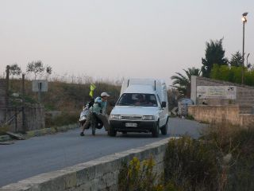
Il est tard, le soleil est en train de se coucher, nous venons de passer Gravina et prenons la route de Matera. La campagne dans les Pouilles et la Basilicate est assez déserte. Où allons nous dormir ? On entrevoit au loin une ferme et je propose à Francis d'y aller. Il n'est pas très convaincu mais ce soir, c'est moi le chef.
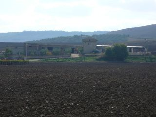
Nous prenons donc le chemin de terre qui sillonne au milieu des champs et arrivons devant une bâtisse grisâtre entourée de bâtiments de ferme. Les chiens nous accueillent en aboyant, les odeurs de chèvre et de fumier sont omniprésentes.Nous tombons nez a nez avec une petite dame au visage creusé par le temps et par le soleil. Un jeune de notre âge la suit de près.Comme le temps presse, nous passons directement au vif du sujet et demandons si nous pouvons installer notre tente dans un des champs à proximité de la maison.
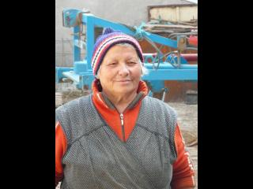
La petite dame nous répond que non, pas vraiment, car elle va se faire déchirer car les chiens de sa ferme qui sont très voraces. Nous commençons alors à expliquer un peu qui nous sommes, quel est notre projet... Le jeune nous aide car il comprend un peu le français, Rachid nous explique en effet qu'il vient du Maroc et est arrivé en Italie depuis peu pour travailler. La petite dame finit par marmonner qu'on n'a qu'a se mettre là, en face de l'enclos des cochons et des poules.
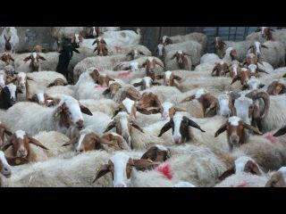
Nous la remercions quand arrive son mari en tracteur. Il bougonne quelque chose avec sa femme. Nous nous imaginons bien sûr qu'il n'est pas content. Mais non, pas du tout, il veut que nous rentrions dormir dans leur maison.
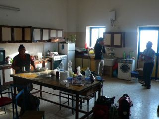
Nous pénétrons dans une grande pièce très sobre, qui sert à la fois de cuisine, de salle à manger et de salon. La dame nous demande si nous avons mangé, et non. Elle me demande alors ce que je compte cuisiner. Nous avons des conchiglie, spécialité des Pouilles, et de la sauce tomate. Elle me demande comment je compte les préparer, je ne vois pas trop ce qu'elle veut dire, puisque nous n'avons pas 100 000 ingrédients. Alors je lui demande pour éluder la question comment elle les prépare. Elle me propose ainsi de me montrer comment elle fait, et nous cuisine nos pâtes de façon délicieuse en y ajouttant des épices et beaucoup d'amour.
Nous nous asseyons alors tous les 4 autour de la grande table en bois, usée comme le plan de travail d'un boucher. Le fermier allume la télé qu'il regarde d'un air concentré.
Nous discutons et apprenons qu'ils s'appellent Antonio et Nicoletta. Ils sont très fiers de nous parler de leurs 3 fils et de leur réussite : l'ainé est ingenieur agronome, marié et a 2 enfants, le second est docteur en pharmacie, exerce à l'hôpital de Foggia mais il est très amoureux de sa femme et vit donc a Rome où elle travaille. Quant au petit dernier, il a un diplôme d'économie et de commerce mais ne se decide pas à se marier. Au grand damne de Nicoletta manifestement.
Nous commençons a nous sentir plus à l'aise, et ces deux personnages diffusent beaucoup de gentillesse. Nous leur proposons du vin, mais ils refusent. Lui nous explique qu'il s'est fait opérer a Londres et greffer un nouveau foie. Elle se met a pleurer ; Antonio nous explique que sa femme est malade, et nous demande de faire une prière à la Madone pour elle. Je comprends que Nicoletta a très probablement un cancer, et j'ai beaucoup de peine pour elle. Cette femme semble avoir donné tellement d'énergie et d'amour pour sa famille, que sa souffrance paraît très injuste. Je ne sais pas trop quoi faire pour la réconforter, et lui fait une petite caresse sur l'épaule.
Antonio n'arrête pas de nous dire de manger, surtout a moi. Il me dit : "tu dois manger pour 2. Tu sais pourquoi ?" je ne vois pas trop. Et lui de répondre : "au cas où vous repartiez d'Italie a 3". Il part d'un bon rire et nous le suivons de bon coeur.
Il nous demande alors de rester le week-end, car le dimanche, c'est ricotta : il veut que nous assistions à sa fabrication. Nous déclinons l'invitation car nous devons filer à Bari pour déposer nos affaires et rejoindre la famille maternelle de Francis a Stromboli.
Nous nous couchons ce soir-là dans de vrais lits, dans la chambre de leurs fils, a 20h30, épuisés.
Le lendemain, nous nous levons a 7h30, quand Antonio revient des champs, et Nicoletta a déjà finit de traire ses 150 chèvres à la main, et ses 10 vaches à la machine. Ils se lèvent tous 2 a 4h du matin tous les jours, toute l'année ! Mais quand elle nous voit arriver, Nicoletta nous dit qu'il est tôt, que le ciel est brumeux, et que nous devrions retourner nous coucher. Elle nous parle comme une maman.
Nous répondons que nous allons petit-déjeuner et que nous partirons dès que la brume se sera levée. Elle nous apporte alors 2 grands bols de café au lait de vache tout frais. Un délice !
Antonio nous demande si nous avons bien dormi, nous répondons que oui. Il dit que ce n'est pas possible. "Pourquoi?" "parce que vous étiez dans 2 lits séparés." Ah cet Antonio !
Pendant ce temps, la brume ne se dissipait absolument pas. Nous qui voulions partir tôt et filer tels des éclairs, nous sommes chocolats !
Nous avons donc décidé d'accepter l'hospitalité de nos hôtes une nuit de plus.
Grand bien nous fit.
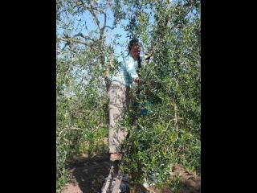
Plusieurs amis sont venus leur rendre visite pendant la matinée. Dont Giacomo. Celui-ci semble enchanté de nous rencontrer et nous emmene illico voir son azienda. Il possède plusieurs hectares qu'il cultive tout seul pour s'occuper car il est à la retraite. Il paraît que c'est son échappatoire, car sa femme n'est pas commode. Sous les oliviers poussent toutes sortes de légumes : salades, chicorée, choux, poivrons, tomates cerises... Des arbres fruitiers sont également disséminés (kaki, grenades, poires, cerises...) Les vignes produisent du raisin a manger et a vignifier. Et les champs produisent des céréales et du grain. C'est le petit coin de paradis de Giacomo.
Il est fier de nous dire qu'il possède 2 tracteurs et nous embarque en voiture jusqu'à Gravina pour nous montrer ses stations essence : une pour les agriculteurs, et une autre classique. Quand nous passons devant les stations concurrentes, il nous dit : "Regarde le prix ici", et quand nous arrivons a la sienne : "tu as vu, c'est la moins chère de la région !" Giacomo rêve de s'étendre : sur son terrain il veut faire construire un bar et une station de lavage pour voitures.
En tous cas, il semble que le commerce fatigue moins que l'agriculture, car Giacomo a 75 ans et parrait plus jeune que Nicoletta et Antonio qui en ont 62.
Nous déjeunons avec Nicoletta et Antonio ; elle a preparé de la ricotta maison panée et revenue a la poêle ainsi que des olives frites. Mmm.
Puis Giacomo nous rembarque et nous fait tout goûter et ramasser. Il remplit 2 cageots entiers pour nous. Nous cueuillons des olives (une variété qui se fait frire), et je l'aide un peu à enlever les mauvaises herbes pendant que Francis reste perché sur son échelle.
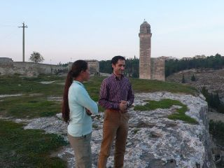
Quand nous rentrons à la ferme, nous rencontrons Michele, le plus jeune des trois fils. Il nous fait monter dans sa belle Lancia et nous conduit à Gravina, ville où il a grandit et dont il est très fier. L'église, les sassi, et le pont romain sur lequel il jouait enfant.
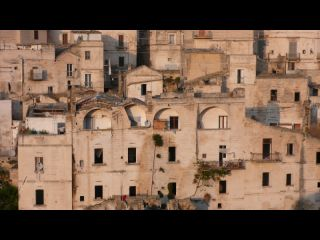
Puis nous repartons pour Matera. Les panneaux indiquent que la vitesse est limitée a 60km/h, mais Michele est plutôt au delà du double. Il nous explique que la nuit tombe, qu'il est en 2nde à 60km/h (à quoi lui serviraient les 3 vitesses supérieures?!), et que ces panneaux sont pour les vélos. Quand nous lui expliquons que Giacomo nous a dit que sa station essence est la moins chère du pays, il explose de rire en nous disant : "je vais vous montrer, moi, où l'essence est vraiment la moins chère."
Nous arrivons à Matera à la nuit tombante. Les sassi sont classés au patrimoine mondial de l'Unesco, mais Michele n'y est encore jamais passé. Nous decouvrons donc ensemble ces maisons troglodytiques où vivaient des familles entières avec leurs bestiaux.
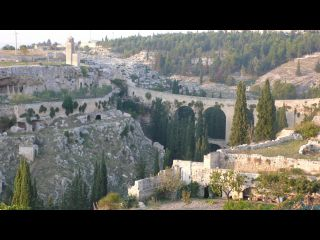
A Gravina, les sassi sont squatés par des immigrés d'Europe de l'Est, tandis que ceux de Matera sont bien mieux entretenus et occupés par des commerçants et des notables. Mais aussi plus touristiques.
C'est Francis qui retrouve la voiture, ce qui épate Michele, un peu perdu dans ce dédale a flanc de gravine (falaise surplombant la rivière qui passe en contrebas).
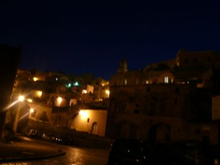
Nous rentrons. Nicoletta a préparé de la viande, car je lui avais dit que Francis aime beaucoup les poissons qui courent dans les prés. Mais Michele veut nous emmener manger une pizza a Gravina. Gênés pour Nicoletta qui a cuisiné, nous mangeons la viande avant de partir boire un verre avec Michele et ses amis. Mais quand nous arrivons à Gravina, Michele explique à ses amis qu'ils ne peuvent pas aller dans le petit resto prévu. Il nous invite dans le meilleur restaurant de la ville, avec vue sur la gravine, les sassi et le pont eclairé. C'est superbe. Ils commandent toutes sortes d'antipasti de la région. Il y en a tellement que le serveur attend que nous finissions les plats pour pouvoir apporter la suite. Les plaisanteries vont bon train, et nous progressons à vue d'oeil en italien. Il faut dire que le bon vin délie la langue.
Après avoir diné pour la 2e fois, nous sommes tous invités par une tante de Michele (qui se trouve par hasard dans le même restaurant) à prendre le dessert pour fêter son anniversaire. Nous parlons alors avec la famille et 2 amis qui parlent un français extraordinaire.
Le ventre plus que plein, nous quittons les amis et la fiancée de Michele, les invitant à nous rendre visite a Paris a notre retour.
Nous nous mettons au lit bien tard.
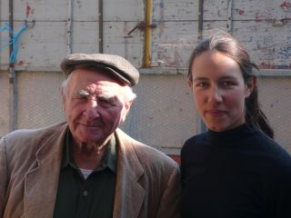
Dimanche matin, nous nous sommes levés a 8h pour assister a la fabrication de la ricotta. C'est Georgio, 82 ans, qui nous fait la démonstration. Il nous explique qu'il faut d'abord monter le lait ( de brebis et de vache) à 30-35*C.
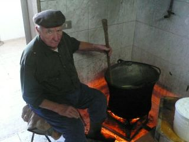
Il mélange à l'aide d'une grande cuillère en bois. La marmite pleine de suie est posée sur un brûleur à gaz mal réglé. Du coup, l'air n'est pas très respirable et nous sortons régulièrement respirer dehors pendant que Giorgio travaille.
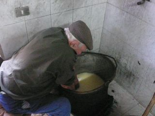
Il nous explique que c'était Nicoletta qui faisait le fromage avant, mais qu'il lui donne un coup de main depuis qu'elle est très malade. Le frère de Giorgio est d'ailleurs en train d'aider Antonio.
Quand des morceaux commencent à s'agglomérer, Giorgio éteint le feu et rassemble les morceaux en plongeant les mains (pas tres propres) dans la marmite.
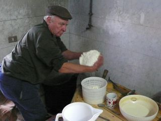
Il met ensuite le tout dans un bac en plastique percé de petits trous. Puis il remet à chauffer : il faut atteindre environ 100*C pour la ricotta. Il fait alors de même en agglomérant les morceaux. Il faut 5 litres de lait de vache ou 3 litres de lait de brebis pour faire 1 kg de fromage. Une fois qu'il a fini, le nettoyage est sommaire.
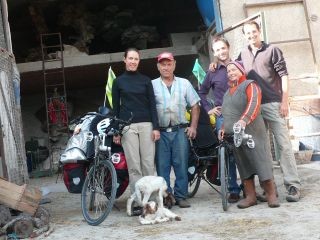
Nous voulons alors partir, mais Nicoletta veut que nous mangions quelque chose pour avoir la force de pédaler jusqu'à Bari. Nous partons donc vers 13h, après quelques photos et pleins d'énergie.
Les 72km qui nous séparent de Bari passent bien vite, et nous arrivons a l'auberge de jeunesse à la tombée de la nuit.
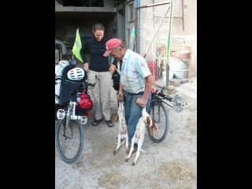
Nous remercions du fond du coeur Antonio et Nicoletta de nous avoir accueillis comme leurs enfants, et de nous avoir montré que le bonheur est souvent dans les choses les plus simples.
Grazie Antonio e Nicoletta, pensiamo sempre a vuoi.
Merci a Michele d'avoir été comme un ami et comme un frère. Tu seras toujours le bienvenu chez nous.
Grazie Michele per la tua generosita e amabilita. A Parigi...
Grazie a vuoi : Giacomo, Giorgio, Angela, ...
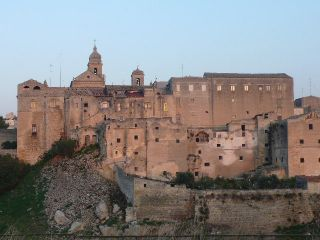
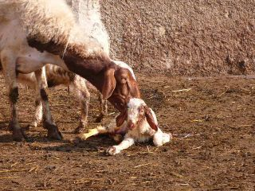
Il est tard, le soleil est en train de se coucher, nous venons de passer Gravina et prenons la route de Matera. La campagne dans les Pouilles et la Basilicate est assez déserte. Où allons nous dormir ? On entrevoit au loin une ferme et je propose à Francis d'y aller. Il n'est pas très convaincu mais ce soir, c'est moi le chef.
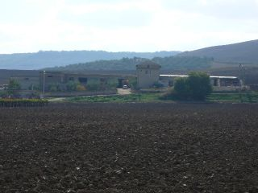
Nous prenons donc le chemin de terre qui sillonne au milieu des champs et arrivons devant une bâtisse grisâtre entourée de bâtiments de ferme. Les chiens nous accueillent en aboyant, les odeurs de chèvre et de fumier sont omniprésentes.Nous tombons nez a nez avec une petite dame au visage creusé par le temps et par le soleil. Un jeune de notre âge la suit de près.Comme le temps presse, nous passons directement au vif du sujet et demandons si nous pouvons installer notre tente dans un des champs à proximité de la maison.
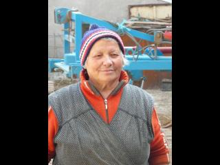
La petite dame nous répond que non, pas vraiment, car elle va se faire déchirer car les chiens de sa ferme qui sont très voraces. Nous commençons alors à expliquer un peu qui nous sommes, quel est notre projet... Le jeune nous aide car il comprend un peu le français, Rachid nous explique en effet qu'il vient du Maroc et est arrivé en Italie depuis peu pour travailler. La petite dame finit par marmonner qu'on n'a qu'a se mettre là, en face de l'enclos des cochons et des poules.
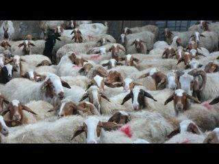
Nous la remercions quand arrive son mari en tracteur. Il bougonne quelque chose avec sa femme. Nous nous imaginons bien sûr qu'il n'est pas content. Mais non, pas du tout, il veut que nous rentrions dormir dans leur maison.
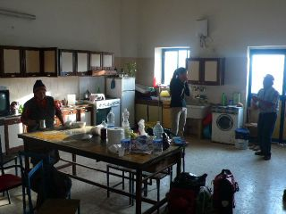
Nous pénétrons dans une grande pièce très sobre, qui sert à la fois de cuisine, de salle à manger et de salon. La dame nous demande si nous avons mangé, et non. Elle me demande alors ce que je compte cuisiner. Nous avons des conchiglie, spécialité des Pouilles, et de la sauce tomate. Elle me demande comment je compte les préparer, je ne vois pas trop ce qu'elle veut dire, puisque nous n'avons pas 100 000 ingrédients. Alors je lui demande pour éluder la question comment elle les prépare. Elle me propose ainsi de me montrer comment elle fait, et nous cuisine nos pâtes de façon délicieuse en y ajouttant des épices et beaucoup d'amour.
Nous nous asseyons alors tous les 4 autour de la grande table en bois, usée comme le plan de travail d'un boucher. Le fermier allume la télé qu'il regarde d'un air concentré.
Nous discutons et apprenons qu'ils s'appellent Antonio et Nicoletta. Ils sont très fiers de nous parler de leurs 3 fils et de leur réussite : l'ainé est ingenieur agronome, marié et a 2 enfants, le second est docteur en pharmacie, exerce à l'hôpital de Foggia mais il est très amoureux de sa femme et vit donc a Rome où elle travaille. Quant au petit dernier, il a un diplôme d'économie et de commerce mais ne se decide pas à se marier. Au grand damne de Nicoletta manifestement.
Nous commençons a nous sentir plus à l'aise, et ces deux personnages diffusent beaucoup de gentillesse. Nous leur proposons du vin, mais ils refusent. Lui nous explique qu'il s'est fait opérer a Londres et greffer un nouveau foie. Elle se met a pleurer ; Antonio nous explique que sa femme est malade, et nous demande de faire une prière à la Madone pour elle. Je comprends que Nicoletta a très probablement un cancer, et j'ai beaucoup de peine pour elle. Cette femme semble avoir donné tellement d'énergie et d'amour pour sa famille, que sa souffrance paraît très injuste. Je ne sais pas trop quoi faire pour la réconforter, et lui fait une petite caresse sur l'épaule.
Antonio n'arrête pas de nous dire de manger, surtout a moi. Il me dit : "tu dois manger pour 2. Tu sais pourquoi ?" je ne vois pas trop. Et lui de répondre : "au cas où vous repartiez d'Italie a 3". Il part d'un bon rire et nous le suivons de bon coeur.
Il nous demande alors de rester le week-end, car le dimanche, c'est ricotta : il veut que nous assistions à sa fabrication. Nous déclinons l'invitation car nous devons filer à Bari pour déposer nos affaires et rejoindre la famille maternelle de Francis a Stromboli.
Nous nous couchons ce soir-là dans de vrais lits, dans la chambre de leurs fils, a 20h30, épuisés.
Le lendemain, nous nous levons a 7h30, quand Antonio revient des champs, et Nicoletta a déjà finit de traire ses 150 chèvres à la main, et ses 10 vaches à la machine. Ils se lèvent tous 2 a 4h du matin tous les jours, toute l'année ! Mais quand elle nous voit arriver, Nicoletta nous dit qu'il est tôt, que le ciel est brumeux, et que nous devrions retourner nous coucher. Elle nous parle comme une maman.
Nous répondons que nous allons petit-déjeuner et que nous partirons dès que la brume se sera levée. Elle nous apporte alors 2 grands bols de café au lait de vache tout frais. Un délice !
Antonio nous demande si nous avons bien dormi, nous répondons que oui. Il dit que ce n'est pas possible. "Pourquoi?" "parce que vous étiez dans 2 lits séparés." Ah cet Antonio !
Pendant ce temps, la brume ne se dissipait absolument pas. Nous qui voulions partir tôt et filer tels des éclairs, nous sommes chocolats !
Nous avons donc décidé d'accepter l'hospitalité de nos hôtes une nuit de plus.
Grand bien nous fit.
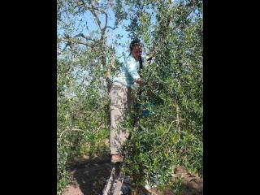
Plusieurs amis sont venus leur rendre visite pendant la matinée. Dont Giacomo. Celui-ci semble enchanté de nous rencontrer et nous emmene illico voir son azienda. Il possède plusieurs hectares qu'il cultive tout seul pour s'occuper car il est à la retraite. Il paraît que c'est son échappatoire, car sa femme n'est pas commode. Sous les oliviers poussent toutes sortes de légumes : salades, chicorée, choux, poivrons, tomates cerises... Des arbres fruitiers sont également disséminés (kaki, grenades, poires, cerises...) Les vignes produisent du raisin a manger et a vignifier. Et les champs produisent des céréales et du grain. C'est le petit coin de paradis de Giacomo.
Il est fier de nous dire qu'il possède 2 tracteurs et nous embarque en voiture jusqu'à Gravina pour nous montrer ses stations essence : une pour les agriculteurs, et une autre classique. Quand nous passons devant les stations concurrentes, il nous dit : "Regarde le prix ici", et quand nous arrivons a la sienne : "tu as vu, c'est la moins chère de la région !" Giacomo rêve de s'étendre : sur son terrain il veut faire construire un bar et une station de lavage pour voitures.
En tous cas, il semble que le commerce fatigue moins que l'agriculture, car Giacomo a 75 ans et parrait plus jeune que Nicoletta et Antonio qui en ont 62.
Nous déjeunons avec Nicoletta et Antonio ; elle a preparé de la ricotta maison panée et revenue a la poêle ainsi que des olives frites. Mmm.
Puis Giacomo nous rembarque et nous fait tout goûter et ramasser. Il remplit 2 cageots entiers pour nous. Nous cueuillons des olives (une variété qui se fait frire), et je l'aide un peu à enlever les mauvaises herbes pendant que Francis reste perché sur son échelle.
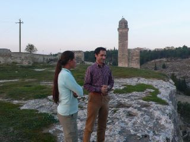
Quand nous rentrons à la ferme, nous rencontrons Michele, le plus jeune des trois fils. Il nous fait monter dans sa belle Lancia et nous conduit à Gravina, ville où il a grandit et dont il est très fier. L'église, les sassi, et le pont romain sur lequel il jouait enfant.
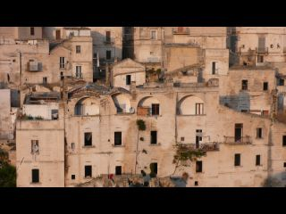
Puis nous repartons pour Matera. Les panneaux indiquent que la vitesse est limitée a 60km/h, mais Michele est plutôt au delà du double. Il nous explique que la nuit tombe, qu'il est en 2nde à 60km/h (à quoi lui serviraient les 3 vitesses supérieures?!), et que ces panneaux sont pour les vélos. Quand nous lui expliquons que Giacomo nous a dit que sa station essence est la moins chère du pays, il explose de rire en nous disant : "je vais vous montrer, moi, où l'essence est vraiment la moins chère."
Nous arrivons à Matera à la nuit tombante. Les sassi sont classés au patrimoine mondial de l'Unesco, mais Michele n'y est encore jamais passé. Nous decouvrons donc ensemble ces maisons troglodytiques où vivaient des familles entières avec leurs bestiaux.
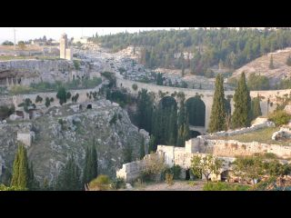
A Gravina, les sassi sont squatés par des immigrés d'Europe de l'Est, tandis que ceux de Matera sont bien mieux entretenus et occupés par des commerçants et des notables. Mais aussi plus touristiques.
C'est Francis qui retrouve la voiture, ce qui épate Michele, un peu perdu dans ce dédale a flanc de gravine (falaise surplombant la rivière qui passe en contrebas).
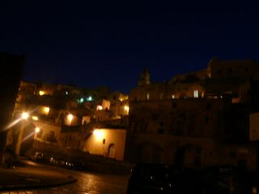
Nous rentrons. Nicoletta a préparé de la viande, car je lui avais dit que Francis aime beaucoup les poissons qui courent dans les prés. Mais Michele veut nous emmener manger une pizza a Gravina. Gênés pour Nicoletta qui a cuisiné, nous mangeons la viande avant de partir boire un verre avec Michele et ses amis. Mais quand nous arrivons à Gravina, Michele explique à ses amis qu'ils ne peuvent pas aller dans le petit resto prévu. Il nous invite dans le meilleur restaurant de la ville, avec vue sur la gravine, les sassi et le pont eclairé. C'est superbe. Ils commandent toutes sortes d'antipasti de la région. Il y en a tellement que le serveur attend que nous finissions les plats pour pouvoir apporter la suite. Les plaisanteries vont bon train, et nous progressons à vue d'oeil en italien. Il faut dire que le bon vin délie la langue.
Après avoir diné pour la 2e fois, nous sommes tous invités par une tante de Michele (qui se trouve par hasard dans le même restaurant) à prendre le dessert pour fêter son anniversaire. Nous parlons alors avec la famille et 2 amis qui parlent un français extraordinaire.
Le ventre plus que plein, nous quittons les amis et la fiancée de Michele, les invitant à nous rendre visite a Paris a notre retour.
Nous nous mettons au lit bien tard.
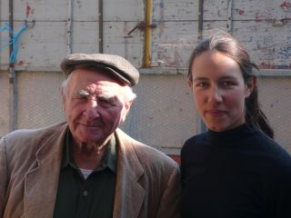
Dimanche matin, nous nous sommes levés a 8h pour assister a la fabrication de la ricotta. C'est Georgio, 82 ans, qui nous fait la démonstration. Il nous explique qu'il faut d'abord monter le lait ( de brebis et de vache) à 30-35*C.
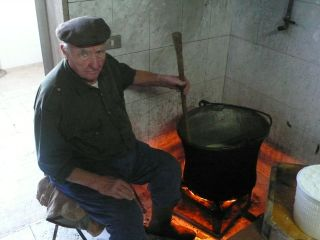
Il mélange à l'aide d'une grande cuillère en bois. La marmite pleine de suie est posée sur un brûleur à gaz mal réglé. Du coup, l'air n'est pas très respirable et nous sortons régulièrement respirer dehors pendant que Giorgio travaille.
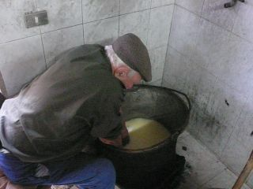
Il nous explique que c'était Nicoletta qui faisait le fromage avant, mais qu'il lui donne un coup de main depuis qu'elle est très malade. Le frère de Giorgio est d'ailleurs en train d'aider Antonio.
Quand des morceaux commencent à s'agglomérer, Giorgio éteint le feu et rassemble les morceaux en plongeant les mains (pas tres propres) dans la marmite.
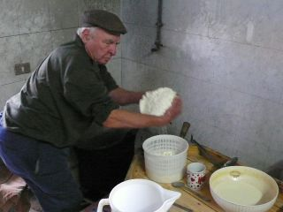
Il met ensuite le tout dans un bac en plastique percé de petits trous. Puis il remet à chauffer : il faut atteindre environ 100*C pour la ricotta. Il fait alors de même en agglomérant les morceaux. Il faut 5 litres de lait de vache ou 3 litres de lait de brebis pour faire 1 kg de fromage. Une fois qu'il a fini, le nettoyage est sommaire.
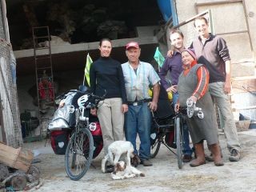
Nous voulons alors partir, mais Nicoletta veut que nous mangions quelque chose pour avoir la force de pédaler jusqu'à Bari. Nous partons donc vers 13h, après quelques photos et pleins d'énergie.
Les 72km qui nous séparent de Bari passent bien vite, et nous arrivons a l'auberge de jeunesse à la tombée de la nuit.
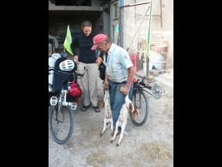
Nous remercions du fond du coeur Antonio et Nicoletta de nous avoir accueillis comme leurs enfants, et de nous avoir montré que le bonheur est souvent dans les choses les plus simples.
Grazie Antonio e Nicoletta, pensiamo sempre a vuoi.
Merci a Michele d'avoir été comme un ami et comme un frère. Tu seras toujours le bienvenu chez nous.
Grazie Michele per la tua generosita e amabilita. A Parigi...
Grazie a vuoi : Giacomo, Giorgio, Angela, ...
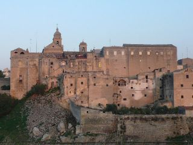
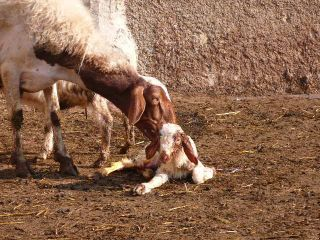


Unregistered user # Thursday, November 13, 2008 5:54:57 PM
Hélène FRON & Francis CHABOUISf6-ln # Friday, November 14, 2008 9:43:37 PM
allez prépare tes mollets, fais chauffer le turbo et viens pédaler avec nous, tu seras bien accueilli
bon courage. Bisous !
Unregistered user # Monday, November 17, 2008 11:22:57 AM
Unregistered user # Monday, November 17, 2008 1:57:18 PM
Unregistered user # Wednesday, November 19, 2008 11:20:23 AM
Unregistered user # Tuesday, November 25, 2008 2:29:22 PM
Unregistered user # Sunday, December 7, 2008 1:45:01 AM
Unregistered user # Thursday, December 11, 2008 2:24:04 PM
Unregistered user # Saturday, December 20, 2008 6:05:18 PM